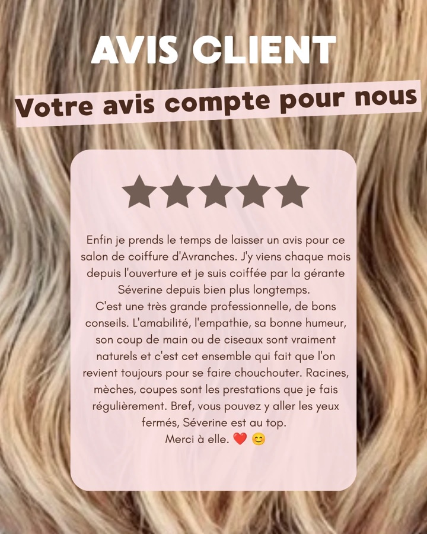
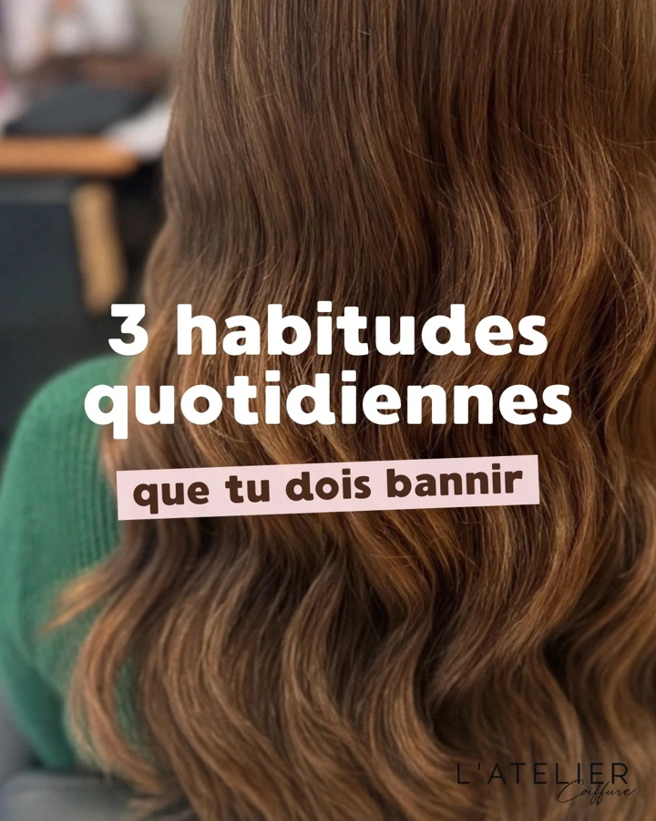
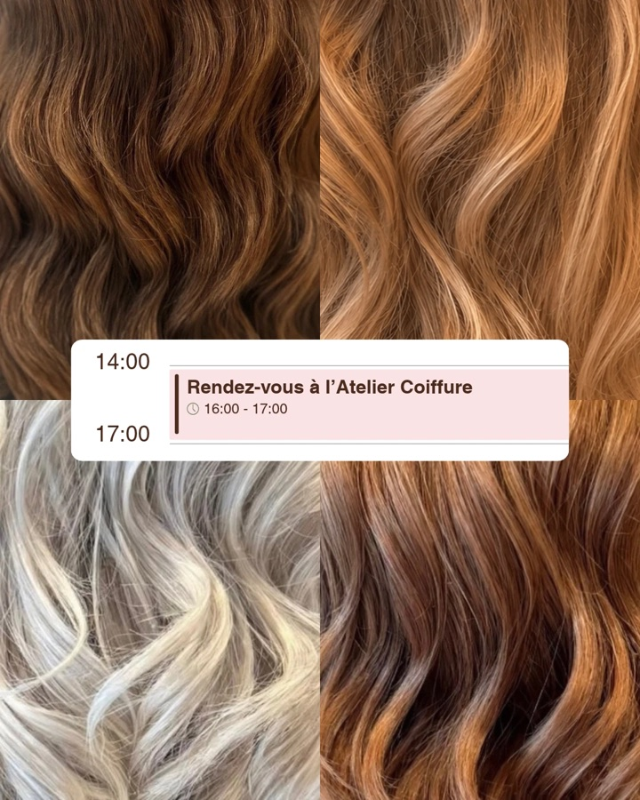
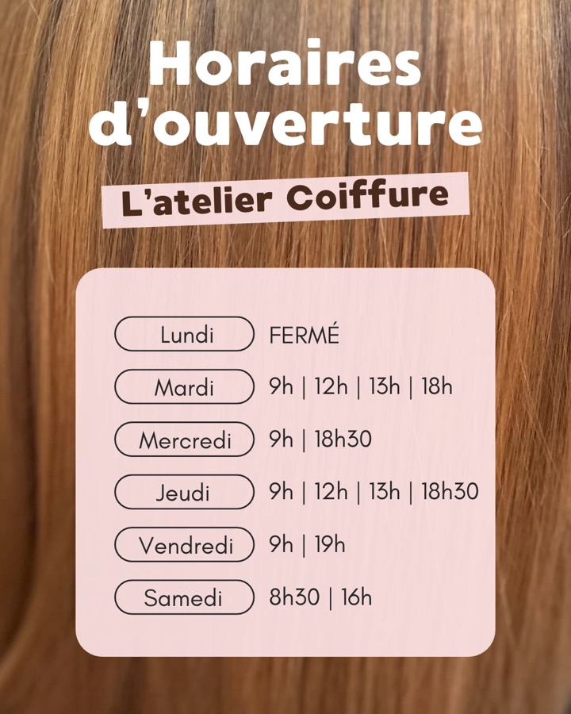

N° 01Projet personnel — Instagram
L’Atelier Coiffure
Pour L’Atelier Coiffure, un salon de coiffure d’Avranches, j’ai conçu des publications Instagram : une offre Black Friday, deux carrousels (des conseils et le récap du mois), une invitation à prendre rendez-vous, un avis client et les horaires d’ouverture.
Publications
6 publications